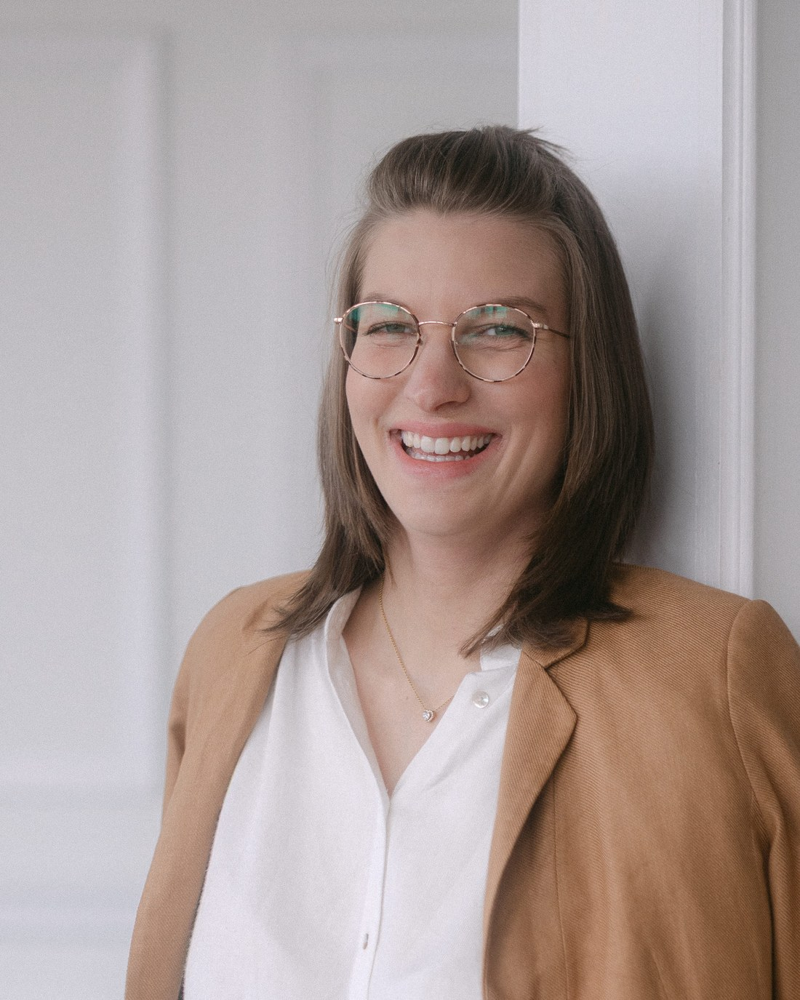

Julia (Machleb)
Co-Founderin von Frauen mit Plan B, Business-Mentorin & Expertin für Umsetzung und TechnikDie mit dem großen Herzen und der ziemlich klaren Meinung.
Ich bin Julia. Herzensmensch, loyal, Bauchmensch und wenn ich etwas richtig unfair finde, merkst du das meistens ziemlich schnell.
Ich entscheide vieles erstmal aus dem Gefühl heraus und habe ein ziemlich gutes Gespür dafür, wenn etwas oder jemand nicht richtig passt. Gleichzeitig bin ich von uns beiden die Geduldigere und bringe oft erstmal Verständnis rein, bevor wir direkt mit der Tür ins Haus fallen. ;-)
Auf unserem eigenen Weg habe ich vor allem eines gelernt: Irgendwann musst du anfangen, auch für dich selbst loszugehen.
Bei Frauen mit Plan B bringe ich deshalb ganz viel Menschlichkeit, Bauchgefühl und vor allem Umsetzung mit. Ich bin die, die sich geduldig in Technik reinfuchst, Dinge baut und aus „Wir müssten mal …" irgendwann „Ist fertig." macht.
Denn du musst nicht erst ein anderer Mensch werden, bevor du anfangen darfst.
Du darfst einfach losgehen. Auch mit Angst, Zweifeln und ganz sicher nicht perfekt.
Bei Frauen mit Plan B bin ich deshalb diejenige, die dir Halt gibt, dich versteht und auch dann an deiner Seite bleibt, wenn du gerade zweifelst oder nicht mehr weiterweißt. Damit du dich auf deinem Weg nicht allein fühlst und trotzdem weitergehst.